Sourcils
Technique poil à poil ultra-naturelle, poudré (microshading) ou combiné. Redessine et densifie le regard.
à partir de 180 €
07 60 29 76 28Derma Capillis, votre experte en maquillage permanent, micropigmentation et tricopigmentation à Draguignan, dans le Var. Sourcils, lèvres, eyeliner : des résultats naturels et sur-mesure, réalisés par une dermographe certifiée.
Technique poil à poil ultra-naturelle, poudré (microshading) ou combiné. Redessine et densifie le regard.
à partir de 180 €Sublimage du contour ou remplissage couleur complète pour des lèvres redessinées et lumineuses.
à partir de 260 €Ligne de cils intensifiée, du trait discret au plus marqué, pour un regard sublimé en permanence.
sur diagnosticGrain de beauté et taches de rousseur naturels, parfaitement personnalisés à votre peau.
grain de beauté 70 €Densification capillaire par micropigmentation du cuir chevelu : masque calvitie, zones clairsemées et cicatrices.
à partir de 499 €Installée à Draguignan, Derma Capillis accueille la clientèle de toute la Dracénie : Trans-en-Provence, Flayosc, Les Arcs-sur-Argens, Lorgues, Vidauban, Le Muy et l'ensemble du Var (83).
L'inconfort est minime grâce à une crème anesthésiante. La plupart des clientes ne ressentent que de légers picotements.
De 1 à 3 ans selon la zone, le type de peau et le mode de vie. Une retouche annuelle ravive l'intensité.
Une micropigmentation du cuir chevelu qui recrée la densité des cheveux et camoufle calvitie, zones clairsemées ou cicatrices.
Sourcils dès 180 €, lèvres dès 260 €, grain de beauté 70 €, densification capillaire dès 499 €. Le tarif exact est défini lors du diagnostic.